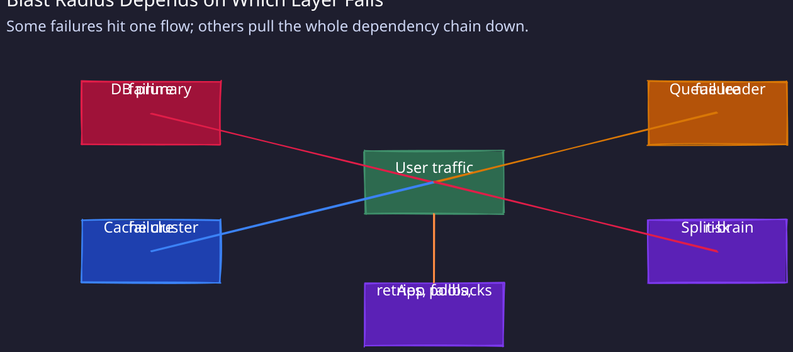
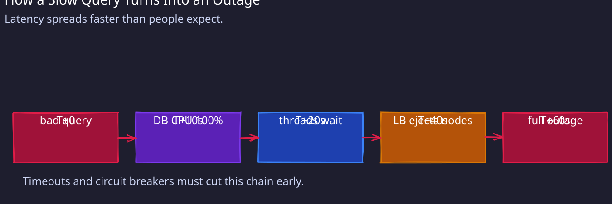

Below are the standard failure scenarios:

1. Database Primary Failure
Trigger: Database primary node crashes, hardware failure, or network partition
Blast Radius:
- Primary impact: All writes fail (100% write traffic)
- Secondary impact: Reads may fail if applications don’t failover
- User-facing: “Service unavailable” errors for writes
Detection:
- Time to detect: 5-10 seconds (health check interval)
- Signals: Connection timeouts, health check failures
- Alerts: Database primary unreachable, write error rate >90%
Cascade Risk:
- Application servers: Connection pool exhaustion (all threads waiting)
- Message queue: Write backlog grows (unable to persist)
- Cache: Invalidation stops (can’t write through to DB)
- Worst case: Full system outage if reads also fail
Mitigation:
- Automatic (30-60s): Orchestrator promotes replica to primary, reconfigures apps to new primary
- Manual (5-10min): If auto-failover fails, manually promote replica, update DNS/config
- Degraded mode: Read-only mode (serve stale data, block writes)
Recovery:
- RTO: 1-2 minutes (automatic failover)
- RPO: 0 seconds (synchronous replication) OR 1-5 seconds (async replication)
- Full recovery: 15-30 minutes (provision new replica for redundancy)
Prevention:
- Multi-AZ deployment with automatic failover
- Regularly test failover (monthly game days)
- Monitor replication lag (<1s alert threshold)
- Graceful degradation (read-only mode)
2. Cache Cluster Failure
Trigger: Redis cluster failure, memory exhaustion, or network partition
Blast Radius:
- Primary impact: 0% cache hit rate (100% cache miss)
- Secondary impact: Database load increases 5-10x (was 90% hit rate)
- User-facing: Slow responses (50ms → 500ms latency)
Detection:
- Time to detect: 2-5 seconds (connection timeouts)
- Signals: Cache error rate spikes, database QPS spikes, latency increase
- Alerts: Cache unavailable, hit rate <50%, DB CPU >80%
Cascade Risk:
- Database: Overload from 10x QPS increase (may crash)
- Application: Thread pool exhaustion (all threads waiting for DB)
- Users: Timeouts if DB can’t handle load
- Worst case: Total outage if DB saturates (thundering herd)
Mitigation:
- Automatic (immediate): Circuit breaker fails fast to DB, skip cache
- Automatic (10-30s): Rate limiting kicks in (shed 30-50% traffic to protect DB)
- Manual (2-5min): Restart cache, pre-warm with hot keys
- Degraded mode: Serve stale data from backup dump, reduce query complexity
Recovery:
- RTO: 5 minutes (restart cluster, rehydrate hot keys)
- RPO: N/A (cache is not source of truth)
- Full recovery: 15 minutes (full cache warm-up)
Prevention:
- Cache cluster with multiple nodes (failover)
- Database can handle 2-3x normal load (capacity buffer)
- Stale cache fallback (daily dump to S3)
- Rate limiting and circuit breakers
- Gradual cache expiration (avoid synchronized TTL)
3. Message Queue Partition Leader Failure
Trigger: Kafka broker crashes or network partition isolates leader
Blast Radius:
- Primary impact: One partition unavailable (1/N of traffic)
- Secondary impact: Consumer lag increases for that partition
- User-facing: Delayed processing for affected entity IDs
Detection:
- Time to detect: 5-10 seconds (leader election timeout)
- Signals: UnderReplicatedPartitions metric, ISR shrinks
- Alerts: Partition offline, consumer lag >1 minute
Cascade Risk:
- Consumers: Rebalancing causes all partitions to pause briefly
- Producers: Retry storm (all messages for partition retry)
- Other partitions: Increased load if consumer rebalances poorly
- Worst case: Full consumer group rebalance (all partitions pause)
Mitigation:
- Automatic (10-30s): Leader election promotes replica, consumers reconnect
- Manual (5min): If election fails, restart broker, check quorum
- Degraded mode: N/A (partition must have leader)
Recovery:
- RTO: 30 seconds (leader election + consumer reconnect)
- RPO: 0 (replicated to N replicas before ack)
- Full recovery: Immediate (new leader fully caught up)
Prevention:
- 3+ replicas per partition (tolerate 2 failures)
- min.insync.replicas=2 (ensure replication)
- Static membership (avoid rebalancing storms)
- Incremental cooperative rebalancing (Kafka 2.4+)
4. Cascading Failure: Slow Query

Trigger: Bad query or missing index causes database CPU spikeBlast Radius:
- Primary impact: One slow query blocks others (locks/CPU)
- Grows to: All queries slow (resource contention)
- Ends with: Total outage (connection pool exhausted, users timeout)
Detection:
- Time to detect: 10-30 seconds (latency spike)
- Signals: DB CPU >90%, query latency P99 >5000ms, active connections >95% pool
- Alerts: Latency SLO violated, error rate increasing
Cascade Timeline:
- T+0: Bad query submitted (no index, scans 100M rows)
- T+5s: DB CPU spikes to 100%, query takes 30s instead of 10ms
- T+10s: Other queries queue behind slow query, latency increases
- T+20s: Application threads exhaust waiting for DB responses
- T+30s: Load balancer marks app instances unhealthy (timeout)
- T+40s: Traffic shifts to remaining instances, they also overload
- T+60s: Total outage, all instances unhealthy
Cascade Risk:
- Application: Thread pool exhaustion (all threads blocked on DB)
- Load balancer: Shifts traffic to healthy instances, overloading them
- Database: Connection exhaustion, OOM from query buffers
- Users: 100% error rate (timeouts)
- Worst case: Full outage requiring manual intervention
Mitigation:
- Automatic (10s): Query timeout kills slow query (1-5s timeout)
- Automatic (20s): Circuit breaker opens (stop sending queries to DB)
- Automatic (30s): Bulkhead pattern isolates slow query pool (separate thread pool)
- Manual (5min): Kill connection, identify bad query, add index
- Degraded mode: Rate limiting sheds 50% traffic, serve cached data only
Recovery:
- RTO: 2 minutes (kill query, restart connections)
- RPO: N/A
- Full recovery: 5 minutes (traffic ramps back up)
Prevention:
- Query timeout (1-5s max per query)
- Circuit breaker (open after 10 failures in 30s)
- Bulkhead pattern (separate thread pools per dependency)
- Connection pool limits (prevent DB exhaustion)
- Load shedding (reject requests when P99 >500ms)
- Query review process (catch bad queries before production)
5. Split-Brain Scenario
Trigger: Network partition between data centers, both sides think they’re primary
Blast Radius:
- Primary impact: Divergent writes to both “primaries”
- Secondary impact: Data conflicts, inconsistency
- User-facing: Different users see different data
Detection:
- Time to detect: 30-60 seconds (monitoring sees 2 primaries)
- Signals: Multiple primaries in cluster, conflicting writes, version skew
- Alerts: Primary count >1, replication lag increasing
Cascade Risk:
- Data corruption: Two primaries accept conflicting writes
- Consistency: Permanent data divergence requiring manual reconciliation
- Availability: Must take one side offline to resolve
- Worst case: Data loss (one side’s writes discarded)
Mitigation:
- Automatic (immediate): Quorum-based writes (reject writes without N/2+1 acks)
- Automatic (30s): Fencing tokens (only latest epoch can write)
- Manual (10min): STONITH (Shoot The Other Node In The Head), force one offline
- Degraded mode: Read-only mode on minority partition
Recovery:
- RTO: 5-15 minutes (force one offline, reconcile data)
- RPO: Depends (may lose minority partition’s writes)
- Full recovery: 1-4 hours (data reconciliation, bring second DC back online)
Prevention:
- Quorum-based consensus (Raft, Paxos)
- Fencing tokens (generation numbers)
- Network partition testing (chaos engineering)
- Active-passive instead of active-active (simpler)
- Strong consistency > availability in financial systems
1. Quick Reference: Common Failure Categories
1. By Component:
- Database failures: Primary down, replica lag, split-brain, connection exhaustion
- Cache failures: Cluster down, memory exhaustion, thundering herd
- Message queue failures: Partition leader down, consumer lag, rebalancing
- Network failures: Partition, high latency, packet loss
- Deployment failures: Bad release, config error, resource exhaustion
- Cascading failures: Slow query, retry storm, connection exhaustion
2. By Detection Time:
- <5 seconds: Connection timeouts, health check failures
- 5-30 seconds: Metric anomalies, leader elections
- 30-60 seconds: Aggregated metrics, SLO violations
- >1 minute: User reports, data inconsistencies
3. By RTO (Recovery Time Objective):
- <1 minute: Automatic failover (Redis, DB replicas)
- 1-5 minutes: Automatic recovery (leader election, cache restart)
- 5-30 minutes: Manual intervention (rollback, node replacement)
- >30 minutes: Data reconciliation, full cluster rebuild
2. Interview Tips
- Pick 3-5 failures max: Cover most critical, don’t exhaustively list all
- Show cascade awareness: “If X fails, Y happens, which causes Z”
- Quantify blast radius: “33% of traffic affected” > “some users affected”
- Mention detection AND mitigation: Show operational maturity
- Balance automatic vs manual: Show you design for automation but have manual fallbacks